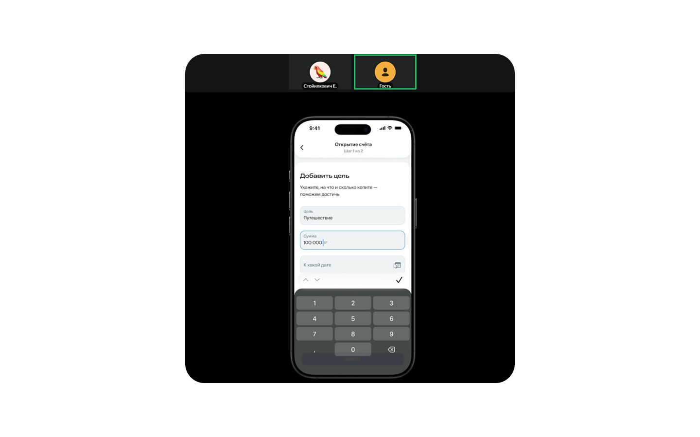
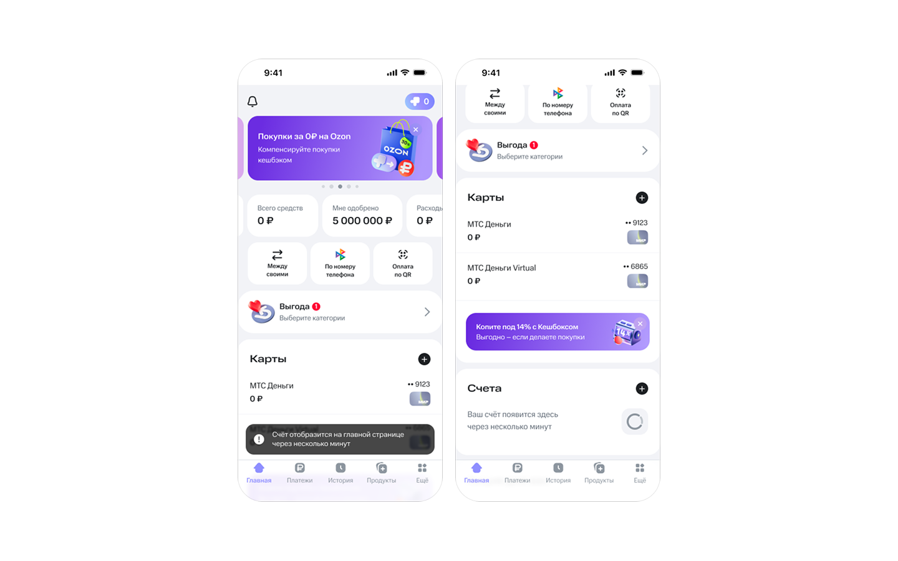

Редизайн накопительной системы МТС Банка

Погружение в проблему
В МТС Банке можно хранить и копить деньги на вкладе или накопительном счете. Реальные отзывы об использовании системы накопления достаточно негативные, я решила разобраться в чем может быть истинная причина.
Я прошла сценарий открытия накопительного счёта, решила сфокусироваться и проработать именно его — потому что возникло достаточно большое количество сложностей:
- Тяжело найти как открыть счет
- Неочевидна выгода разных продуктов
- Сложные условия вызывают недоверие
Если проблематика подтвердится, я смогу доработать сценарии, чтобы обеспечить выгоду как для пользователя, так и для бизнеса.
Банк сможет эффективно продвигать свои продукты, повысит уровень доверия и лояльности, если клиент будет видеть выгоду в использовании систем накопления, позитивно о них отзываться и рекомендовать знакомым.

Гипотезы
- Сложный путь. Продукт закопан глубоко в витрине. Нужно потратить много времени, чтобы его найти.
- Неочевидность выгоды. Описания на карточках дублируются. Пользователь не может быстро понять, какой счёт лучше выбрать для себя.
- Описание не ориентировано на пользователя. Пункты в описании счёта чрезмерно объемные и не каждый понятен.
UX-тестирование оригинала
Задача для пользователей: Ты хочешь накопить на отпуск и прямо сейчас у тебя есть какая-то сумма денег. Тебе выгодно положить ее под процент. Но в любой момент времени тебе может понадобиться снять часть этих денег. Открой подходящий под твою задачу продукт банка. После открытия: найди свой счет.
Результаты: Все три респондента путались в приложении. Двое застряли на пополнении счёта (не поняли переключатель). Один не смог найти накопительный счёт. Респонденты чувствовали раздражение, непонимание, гнев и испытывали желание закрыть приложение.
Гайд интервью
Валидационные вопросы
- Как ты обычно копишь деньги? Используешь для этого банковские приложения?
- Какими банками пользуешься?
- Что для тебя самое важное при выборе накопительного счета?
- Было ли такое что ты открывал накопительный счет, а потом жалел?
Тестирование
Предупреждаю, что если возникнут сложности это не вина пользователя, а интерфейса. Прошу респондента вести себя как обычно, не думая о том, что это тестирование. Также прошу комментировать свои действия, трудности, которые возникают, отмечать моменты, которые нравятся.
Опрос после тестирования
- Опиши, что ты делал
- Все ли было понятно?
- Расскажите, что вас смутило или раздражало в процессе
- Как ты понял, что выбрал подходящий счет?
- Какая информация помогла выбрать счет?
- Если бы ты мог что-то изменить в этом процессе, чтобы это было?
- Что ты чувствовал на разных этапах: было спокойно или тревожно?

Какие были сложности?
1. Респонденты нажимали на карточку «Сбор денег». Это не система накопления, а способ организовать сбор с компании людей: например, на подарок другу или ремонт в подъезде. Я переименовала раздел.

2. Трудный выбор. Пользователям было сложно понять отличия счетов, также были жалобы на мелкий текст. После тестирования они не смогли объяснить как выбрали тот или иной счет. Я изменила карточки.

3. Витрина оказалась сложной. Посмотреть все доступные для открытия счета возможно только через витрину, но люди её игнорировали. А когда все же переходили в нее, долго пытались найти вкладку счета.

4. Пополнение счета — камень преткновения. Респонденты нажимали переключатель на автомате, думая, что он обязателен. И застревали, потому что кнопка «Открыть счёт» становилась неактивной.

5. После открытия счёта респонденты не могли его найти. Есть подсказка, о том что счёт отобразится через несколько минут, но люди не обратили на это внимания. Они пытались найти счёт на главной, затем в истории и витрине.

Бенчмаркинг
Я проанализировала решения конкурентов: Т-Банк, Сбер, ВТБ, Альфа-Банк и Озон Банк.
Взяла их лучшие практики и адаптировала под свой сценарий.

Решения
1. Переработка витрины. Переименовала витрину в «Продукты», это название чаще других встречается в банках-конкурентах. Убрала горизонтальный скроллинг, сделала вертикальный. Добавила функцию поиска. Объединила вклады и счета в один раздел «Накопления».

2. UX-редактура текста. Изменила описание накопительных счетов, чтобы пользователь мог оценить выгоду для себя, а не терялся, пытаясь найти разницу.

3. Модернизация сценария открытия счёта. Добавила выбор цели, чтобы сделать накопительные счета более персонализированными для каждого человека. Пользователь указывает сумму и срок, а банк даёт подсказку — план пополнения. Этот пункт можно пропустить, выбрав вариант «Без цели».

4. Изменение в сценарии пополнения счёта. Убрала переключатель, который путал людей, вместо него сделала понятный выбор с помощью radio button.

5. Отображение счёта после его открытия. Усилила подсказку, о том что счёт появится на главной странице через несколько минут, добавив уведомление об этом. Добавила иконку для счёта, которую можно изменить. Название теперь — выбранная цель.

UX-тестирование новой версии
Провела тест нового прототипа на 3 респондентах. Все успешно справились с поставленной задачей, на этот раз я ее более конкретизировала.
Задача: Ты хочешь накопить на отпуск 100 000 рублей до 1 января. Прямо сейчас у тебя есть какая-то сумма денег наличными. Тебе выгодно положить ее в банк под процент. Но в любой момент времени тебе может понадобиться снять часть этих денег. Открой подходящую под твою задачу систему накопления. После открытия: найди свой счет.
Обратная связь только положительная: все было понятно, при прохождении сценария пользователи чувствовали себя спокойно, интерфейс вызывал доверие.

Одно но
Все респонденты проигнорировали уведомление, о том что счёт появится через несколько минут. Сказали, что даже не заметили его. Проблема осталась: люди долго не могли найти счёт и не понимали где он появится.
Я убрала уведомление и заменила его на появление карточки со счетами. После этого снова провела тестирование уже на двух респондентах. Сложностей не возникло! Последняя доработка помогла исправить оставшуюся проблему.
